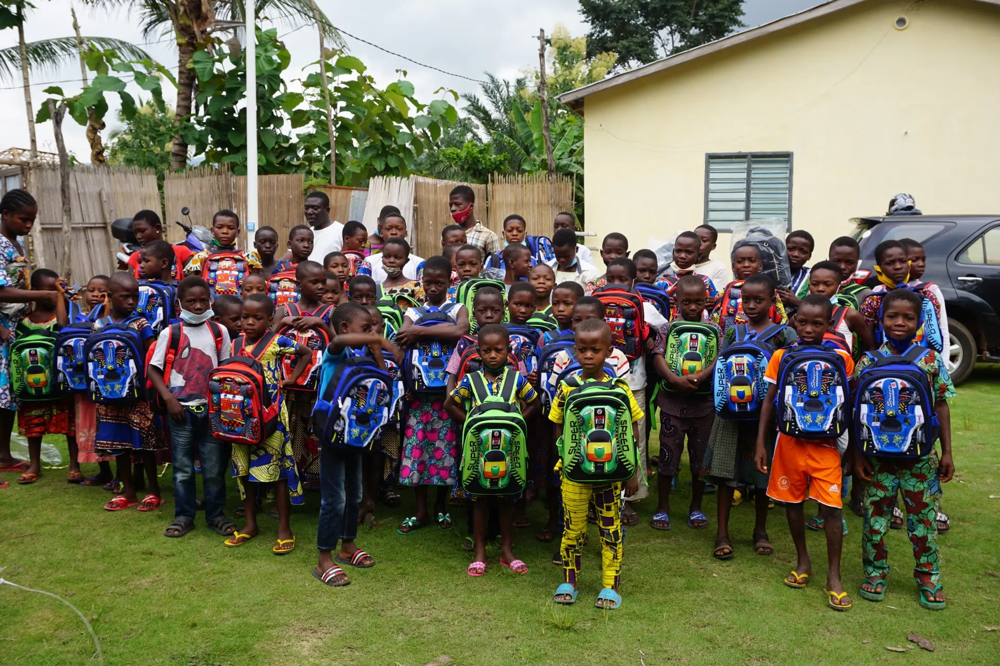
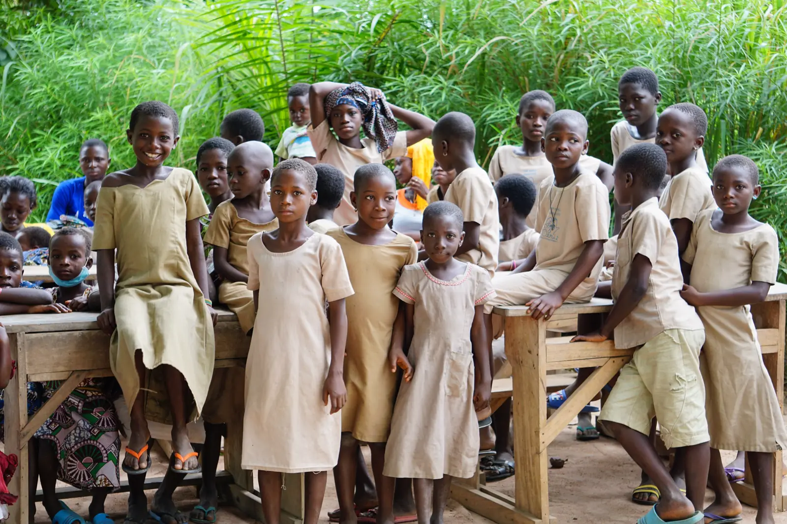
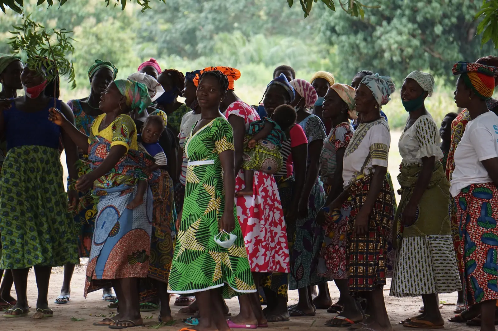
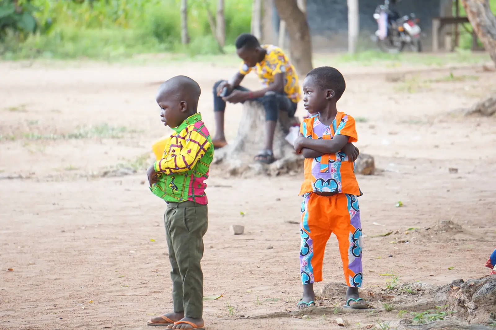
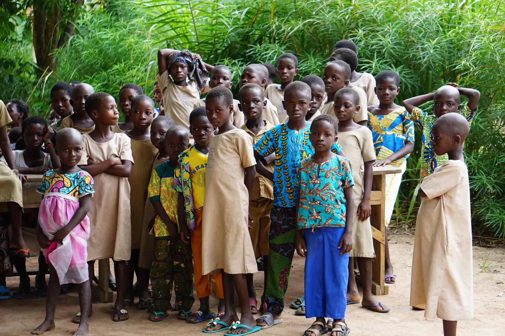
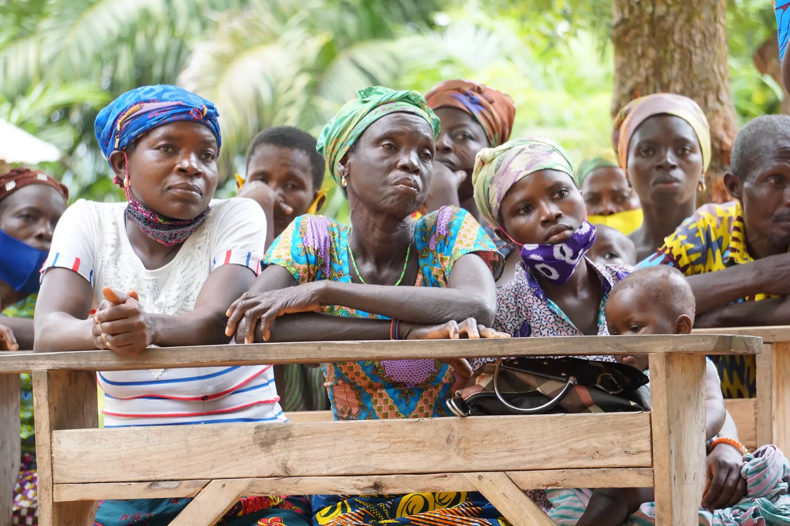

7sur10
Dans 7 foyers sur 10 qui n'ont pas l'eau à domicile, ce sont surtout des femmes et des filles de 15 ans et plus qui vont la chercher.
UNICEF et OMS, 2023 1
Association en création · Fribourg, Suisse
Entre un enfant de la région de Kpalimé, au Togo, et sa salle de classe, il y a parfois des frais trop lourds, des fournitures qui manquent, de l'eau à aller chercher. Nous levons ces obstacles un par un, et nous restons jusqu'à ce que ça tienne.
Rentrée 2021 · région de Kpalimé · Photos : Victoria Goepfert
Notre tracé
Le trait plein montre ce qui est fait, les pointillés ce qui vient, et le point jaune où nous en sommes aujourd'hui.
Départ Fribourg 46°48′ NArrivée Kpalimé 6°54′ NDistance 4 480 km à vol d'oiseau
Pourquoi nous existons
Sur ce chemin, les obstacles sont concrets. Ils ont un prix, une distance, un horaire. On peut les mesurer, donc on peut les lever.
Nous commençons toujours par l'obstacle que les familles désignent elles-mêmes. À Akpato, près de Kpalimé, celui que nous étudions aujourd'hui, c'est l'eau.
7sur10
Dans 7 foyers sur 10 qui n'ont pas l'eau à domicile, ce sont surtout des femmes et des filles de 15 ans et plus qui vont la chercher.
UNICEF et OMS, 2023 1
1sur4
En Afrique subsaharienne, environ une pompe à main sur quatre est en panne à un moment donné. C'est pour cela que nous restons après le chantier.
Foster et al., 2019 2

Rentrée 2021 · région de Kpalimé
Le projet « Le chemin de l'école pour tous », coordonné sur le terrain par Victoria Goepfert avec l'association Assilé-Assimé, a permis de scolariser 106 enfants. C'est de là que tout part.
Rentrée 2021 · région de Kpalimé








Notre méthode
Un parcours balisé, des étapes vérifiées, et on ne s'arrête qu'une fois arrivé. Quatre règles tiennent l'ensemble.

Nous ne lançons rien de nouveau tant que le projet en cours ne tient pas debout tout seul.
Le besoin se définit avec le village et notre partenaire local. Pas depuis Fribourg.
Chaque étape, chaque document et chaque franc figurent dans notre carnet de route.
Un forage est réussi quand l'eau coule encore cinq ans plus tard. Nous revenons le vérifier, et nous publions ce que nous trouvons.
Nous recrutons
Pour créer officiellement l'association, il faut un comité. Nous cherchons un·e trésorier·ère et un·e secrétaire, bénévoles, prêt·es à poser des bases solides avec nous.
Prochaine étape
Chaque page est une étape. Les temps indiqués sont des temps de lecture.